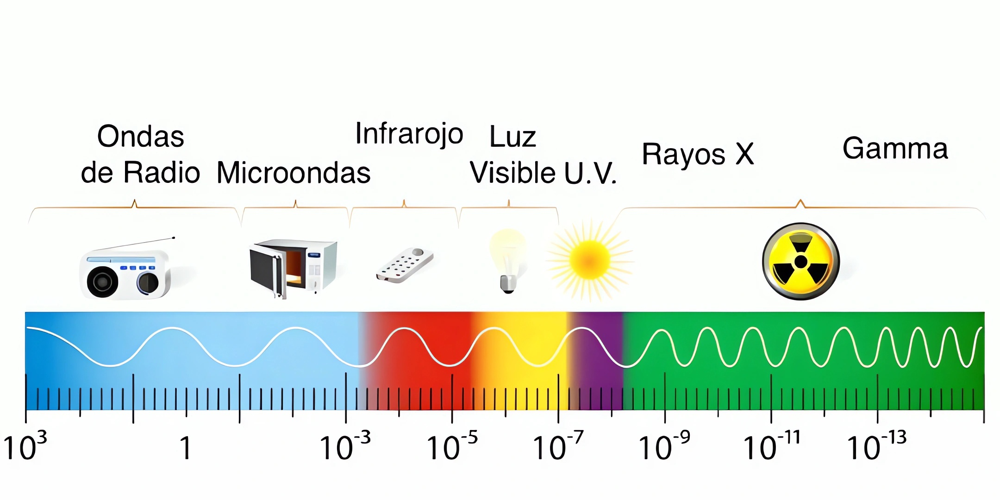

La implementación de módulos solares para recargar los SmartPhones en el futuro.
Por: Rony Josué Letona Cardona (202504524), Brandom Brayan Rodrigo López Rodríguez (202501298), Mynor Esau Salazar Virula (202503791), Cristian Alejandro Vásquez Chávez (202500249)
Para esta parte de la investigación se realizó una revisión bibliográfica de fuentes científicas y organismos oficiales de salud, comparando lo que indican la Organización Mundial de la Salud (OMS), el Centro Internacional de Investigaciones sobre el Cáncer (IARC) y estudios epidemiológicos recientes sobre la exposición humana a la radiofrecuencia.
1. Introducción
Los teléfonos moviles necesitan energía con frecuencia y siempre se depende de la electricidad de la red eléctrica para cargar sus baterías. Los científicos de Fraunhofer ISE investigaron el problema de como es posible utilizar la energía de la luz solar para crear electricidad suficiente y poder recargar un SmartPhone y disminuir la necesidad de utilizar la electricidad convencional.
2. Objetivos e hipótesis
Si se incorporan paneles fotovoltaicos a un smartphone, entonces será posible aprovechar la luz solar para producir electricidad y
prolongar la duración de su batería, reduciendo así la necesidad de conectarlo a la red eléctrica con frecuencia durante el día.
El uso de células solares optimizadas para la baja luminosidad en teléfonos móviles podría aumentar la vida útil de la batería mediante la generación constante de energía lumínica.
Se planteó que si se ponían células solares de alta eficiencia en un teléfono movil capaces de operar en entornos de poca luz,
el dispositivo entonces podría generar carga suficiente con esa energía para conseguir extender la duración de su tiempo de uso.
3. Metodología
En Fraunhofer ISE se fabricaron células solares de silicio muy eficientes. Luego, pusieron estas células solares en módulos pequeños para aparatos electrónicos.
Para probarlo, usaron un teléfono Siemens S25 y le añadieron un módulo con ocho células solares. Tambié probaron cómo trabajaban las células solares con mucha luz y también con muy poca luz.
Una investigación publicada en Proceedings of the National Academy of Sciences (PNAS) demostró experimentalmente la carga de un Galaxy Note 9 utilizando un módulo solar transparente
bajo luz solar natural. Los investigadores también realizaron pruebas exteriores durante 12 horas para evaluar el comportamiento del módulo frente a diferentes niveles de irradiación solar.
Se priorizaron fuentes oficiales y estudios de gran escala en lugar de opiniones o mitos populares, con el fin de contrastar la creencia popular sobre los “rayos nocivos” del celular con
la evidencia científica disponible. Como parte de este proceso también se reviso la magnitud del margen de seguridad establecido por las normas internacionales de exposición a radiofrecuencia.
De acuerdo con el estándar de la Unión Internacional de Telecomunicaciones (UIT-T K.Sup13) Es una porción del espectro electromagnético que usa ondas de alta frecuencia. En otras palabras, son ondas
que repiten mucho sus ciclos en un solo segundo.
Espectro electromagnético graficado
Onda de radio de muy baja frecuencia. Con una longitud de onda mayor a 104 m, una frecuencia menor a 30x103 Hz. Onda larga de radio. Con una longitud de onda menor a 104 m y una frecuencia mayor
a 30x103 Hz.Onda media de radio. Con una longitud de onda menor a 650 m y una frecuencia mayor
a 650x103 Hz .Onda corta de radio. Con una longitud de onda menor a 180 m y una frecuencia mayor
a 1,7x106 Hz.Ondas de radio de muy alta frecuencia. Con una longitud de onda menor a 100 m, una frecuencia mayor a 30x106 Hz. Ondas de radio de ultra alta frecuencia. Con una longitud de onda menor a 1 m y una frecuencia mayor a 300x106 Hz. Radiación de microondas. Con una longitud de onda menor a 10-2 m y una frecuencia mayor a 3x108 Hz.
Infrarrojo lejano o submilimétrico. Con una longitud de onda menor a 350x10-6 m y una frecuencia mayor a 300x109 Hz. Infrarrojo medio. Con una longitud de onda menor a 50x10-6 m y una frecuencia mayor a 6x1012 Hz. Infrarrojo cercano. Con una longitud de onda menor a 2,5x10-6 m y una frecuencia mayor a 120x1012 Hz. Espectro visible de la luz. Con una longitud de onda menor a 780x10-9 m y una frecuencia mayor a 384x1012 Hz. Radiación ultravioleta cercana. Con una longitud de onda menor a 380x10-9 m y una frecuencia mayor a 7,89x1014 Hz. Radiación ultravioleta extrema. Con una longitud de onda menor a 10-8 m y una frecuencia mayor a 1,5x1015 Hz. Rayos X. Con una longitud de onda menor a 10-8 m y una frecuencia mayor a 1016 Hz. Rayos gamma. Con una longitud de onda menor a 10-11 m y una frecuencia mayor a 1019 Hz.
4. Resultados
Los investigadores vieron que las células solares funcionan bien aunque haya poca luz. El teléfono Siemens S25 con el módulo integrado pudo funcionar mucho más tiempo. Además, Fraunhofer
dijo que su módulo alcanzó una eficiencia de casi el 20 % en este estudio sobre teléfonos móviles con energía solar.
Se encontró que sí es posible generar electricidad para un smartphone utilizando luz solar, un resultado importante fue que un módulo solar transparente consiguió cargar un smartphone
mediante luz solar natural. Sin embargo, no significa que los smartphones actuales puedan funcionar únicamente con energía solar.
La radiofrecuencia en el ámbito de los celulares móviles se define como el rango de los campos electromagnéticos necesarios para poder transmitir e intercambiar las señales inalámbricas entre otros
dispositivos, también la evaluación de la exposición humana ante el espectro de radiofrecuencia de dispositivos móviles determinó dos compartimientos principales:
La Organización Mundial de la Salud considera que el uso de teléfonos móviles es inocuo, y hasta la fecha no se han detectado efectos adversos para la salud causados por su uso, tras dos décadas de estudios. Los límites de seguridad actuales se establecieron con un margen 50 veces mayor que los efectos observados por exposición a energía de radiofrecuencia
5. Discusión y conclusión
Este estudio demostró que la energía solar sirve para ayudar a que los dispositivos móviles tengan más carga. Si ponemos células solares eficientes en un teléfono, no necesitaremos usar tanto
los enchufes y el teléfono durará má. Pero hay un detalle: la energía que se consigue depende de qué tan grande sea la superficie de las células solares y de cuánta luz haya. Por eso, la propuesta
es seguir creando células solares mejores y sistemas que aprovechen cualquier tipo de luz.
Se puede concluir que los smartphones capaces de aprovechar la luz solar son técnicamente posibles y pueden contribuir a disminuir el consumo de electricidad convencional, pero todavía
existen desafíos para conseguir que la energía solar sea suficiente para satisfacer completamente las necesidades de un teléfono.
La radiofrecuencia utilizada en la telefonía móvil es una forma de energía no ionizante que no altera la estructura de la materia y no tiene la capacidad de romper enlaces químicos, limitando su
único efecto biológico conocido a la generación de calor controlado a niveles muy bajos.
El único efecto biológico comprobado de la radiofrecuencia utilizada en telefonía móvil es un leve aumento de temperatura en los tejidos, muy por debajo de los límites de seguridad establecidos
internacionalmente. Aun así, se recomienda seguir monitoreando estudios a largo plazo, especialmente con la expansión de tecnologías como el 5G.
6. Referencias
- Glunz, S. W., Dicker, J., Esterle, M., Hermle, M., Isenberg, J., et al. (2002). High-efficiency silicon solar cells for low-illumination applications. IEEE Photovoltaic Specialists Conference.
- Fraunhofer Institute for Solar Energy Systems ISE. (s. f.). High-efficiency silicon solar cells for low-illumination applications. Repositorio de publicaciones de Fraunhofer ISE.
- Technische Informationsbibliothek (TIB). (s. f.). Abschlußbericht für das Forschungsvorhaben. Documento técnico sobre células solares y el teléfono Siemens S25.
- Organización Mundial de la Salud. (2014). Campos electromagnéticos y salud pública: teléfonos móviles. https://avance.digital.gob.es/inspeccion-telecomunicaciones/nivelesexposicion/DocumentacionOMS/
2014_OMS_EfectosSaludExposicionCEM_TelefonosMoviles.pdf - La Opinión. (03 de septiembre de 2024). OMS: no hay relación del cáncer con el uso de teléfonos móviles. https://laopinion.com/2024/09/03/oms-no-hay-relacion-del-cancer-con-el-uso-de-telefonosmoviles/
- Infobae. (4 de septiembre de 2024). El mayor estudio sobre los efectos en la salud de los teléfonos celulares negó que puedan causar cáncer cerebral. https://www.infobae.com/salud/2024/09/04/elmayor-estudio-sobre-los-efectos-en-la-salud-de-los-telefonos-celulares-nego-que-puedan-causarcancer-cerebral/
- Comité Científico Asesor de Radiofrecuencias y Salud (CCARS). (s. f.). Preguntas frecuentes. https://ccars.org.es/saber-mas/faq
- Andrade Lucio, J. A. (1 de enero de 2017). Las ondas en nuestra vida. eUGreka. https://www.ugto.mx/investigacionyposgrado/eugreka//
contribuciones/40-las-ondas-en-nuestra-vid - Unión Internacional de Telecomunicaciones. (10 de diciembre de 2021). Radiofrequency electromagnetic field (RF-EMF) exposure levels from mobile and portable devices during different conditions of use (Serie K Suplemento 13). ITU-T. https://www.itu.int/rec/T-REC-K.Sup13-202112-I/en
- National Academy of Sciences. (07 de agosto de 2024). All-back-contact neutral-colored transparent crystalline silicon solar cells enabling seamless modularization. https://pmc.ncbi.nlm.nih.gov/articles/PMC11331059/
- MIT Energy Initiative. (20 de junio de 2013). Células solares transparentes para dispositivos electrónicos y pantallas. https://energy.mit.edu/news/transparent-solar-cells/
- IEEE Spectrum. (18 de enero de 2012). Células solares de película delgada integradas en pantallas de teléfonos móviles. https://spectrum.ieee.org/solar-cells-in-smartphone-screens
- Science Japan / Japan Science and Technology Agency (JST). (2026). Células solares orgánicas capaces de generar electricidad y emitir luz para aplicaciones en pantallas de smartphones. https://sj.jst.go.jp/news/202608/n0810-02j.html